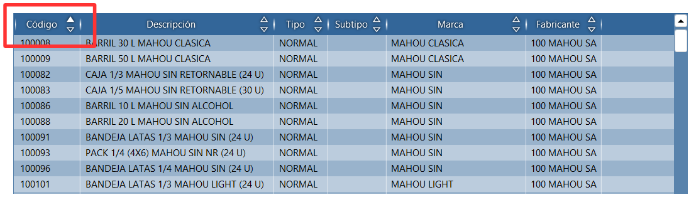
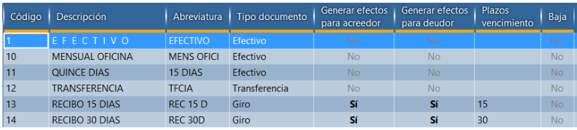
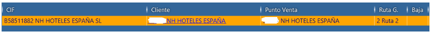

Cuadrículas de datos¶
Cuadrículas son el principal método de visualización y modificación de datos.
Cuadrícula de visualización¶

Es solo de lectura y carga solo los registros que el usuario esta viendo.
Las flechas indican la ordenación actual de la cuadricula. Es posible ordenar por varias columnas a la vez. La ordenación se aplica a todos los resultados, no solo los que están visibles en la cuadricula.
La barra vertical permite cambiar el tamaño de la columna.
Arrastrar la columna permite cambiar el orden las columnas.
Double-click o tecla Entrar activan el registro
Utiliza teclas Mayúscula y CTRL para selección múltiple de los registros
Cuadrícula de modificación¶

Permite modificación de los datos directamente en la línea seleccionada.
Las columnas modificable tienen la cabecera subrayada en color naranja.
La ordenación de la cuadrícula permite ordenar solo por una columna y solo ordena datos que ya están en la cuadrícula.
Teclas de modificación:
Utiliza flechas para seleccionar la casilla
Para editar la casilla simplemente empieza escribir
Para vaciar la casilla aprieta tecla Retroceso
Para cancelar la modificación utiliza tecla ESC
Para confirmar el valor utiliza Enter o Tab o tecla + del teclado numérico.
Advertencia
Confirmar el registro con Enter pasa a siguiente registro. Confirmar con el Tab o + pasa a siguiente columna.
Cuadrícula con vínculos¶

El ejemplo de la búsqueda del cliente presenta registro con vínculos a información relacionada:
identificación fiscal
datos de cliente
datos de punto de venta
ruta de reparto
Click sobre el vínculo abre la pantalla correspondiente. Para editar el valor utiliza las teclas o haz click dentro de la casilla pero fuera del texto.